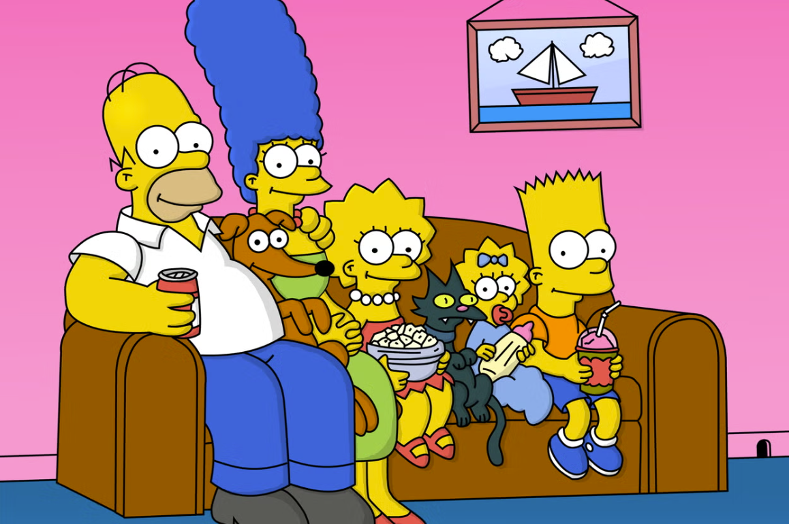
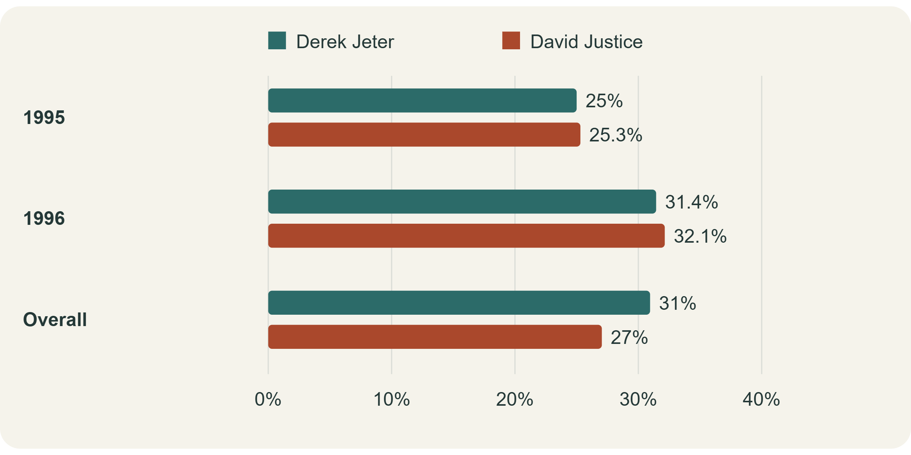

| Period | Derek Jeter | David Justice |
|---|---|---|
| 1995 | 12/48 (25.0%) | 104/411 (25.3%) |
| 1996 | 183/582 (31.4%) | 45/140 (32.1%) |
| Combined | 195/630 (31.0%) | 149/551 (27.0%) |
Meet the other Simpson–The Simpson’s Paradox
personal
statistics
econometrics

Have you ever watched The Simpsons? One of the most famous cartoon in U.S. I love the ironic plots and lovely characters in it. However,here is another Simpson worth meeting: Simpson’s paradox. The shared name makes a fun introduction, but this statistical idea has nothing to do with Springfield. It describes a surprising reversal: a pattern appears in every subgroup, may be opposite with the conclusion that came up with all the groups combined. How can both stories be true?
Two hitters, one surprising scoreboard
Consider the baseball example: Derek Jeter and David Justice in 1995 and 1996. A batting average is hits divided by at-bats, the batting opportunities counted in this statistic. Justice leads in both seasons: 25.3% versus 25.0%, then 32.1% versus 31.4%. Who would you expect to lead across both years?
Jeter wins the combined comparison: 195 hits from 630 at-bats, or 31.0%, against Justice’s 149 from 551, or 27.0%. About 92% of Jeter’s opportunities came in 1996, when both players had higher averages. Only about 25% of Justice’s came that year. Their combined averages therefore give very different importance to each season.

Kidney-stone research example
The same reversal appears in published research. A 1986 study by Charig and colleagues compared kidney-stone treatments. Here we focus on open surgery (A) and percutaneous nephrolithotomy (B), which removes stones through a small opening. Success meant eliminating stones or reducing them below two millimetres after three months.
Successes / patients and success rates. Small stones: under 2 cm; large: 2 cm or more. A = open surgery; B = percutaneous nephrolithotomy.
| Stone size | Treatment B | Treatment A |
|---|---|---|
| Small stones | 234/270 (86.7%) | 81/87 (93.1%) |
| Large stones | 55/80 (68.8%) | 192/263 (73.0%) |
| Overall | 289/350 (82.6%) | 273/350 (78.0%) |
Overall, B succeeded in 82.6% of cases, compared with 78.0% for A. Yet A had higher success rates within both stone-size groups: 93.1% versus 86.7% for small stones, and 73.0% versus 68.8% for large stones. The winner changes when we combine the groups, just as it did with the baseball players.
Why? Large stones accounted for 263 of A’s 350 cases, but only 80 of B’s 350. Success was less common for large stones under either treatment. A therefore faced a much heavier concentration of difficult cases. The overall comparison mixes treatment outcomes with differences in the patients being treated.
Why this Matter?
This matters when interpreting everyday comparisons. In education, school pass rates can reflect differences in students’ prior preparation. In business, campaign conversion rates can reflect whether audiences contain mostly returning customers or newcomers. Comparing relevant subgroups and showing their sizes helps readers see what an overall average actually combines.
In research, the practical application is to examine group composition before interpreting a headline result. Researchers can also compare outcomes using a common set of weights, making the target population explicit. But subgroup comparisons alone do not establish causation: the kidney-stone comparison was historical and nonrandomized, so other differences could still matter.
The lesson is not to distrust every average or split data endlessly. Choosing useful groups requires understanding the question and when variables were measured. Adjusting for consequences of an intervention can itself introduce bias. Next time a headline offers one impressive number, ask: who is inside it, and who contributes most? Simpson’s paradox reminds us that correct numbers can still tell an incomplete story.